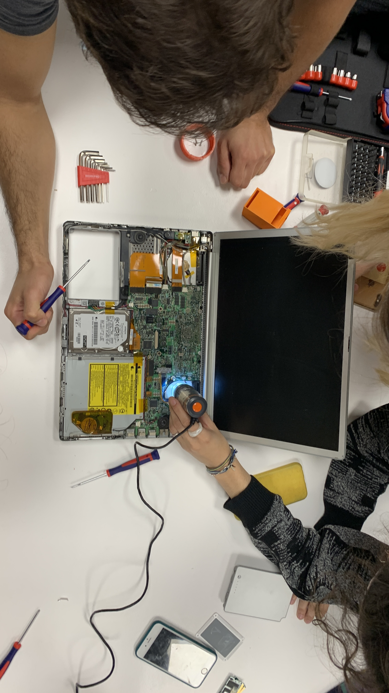
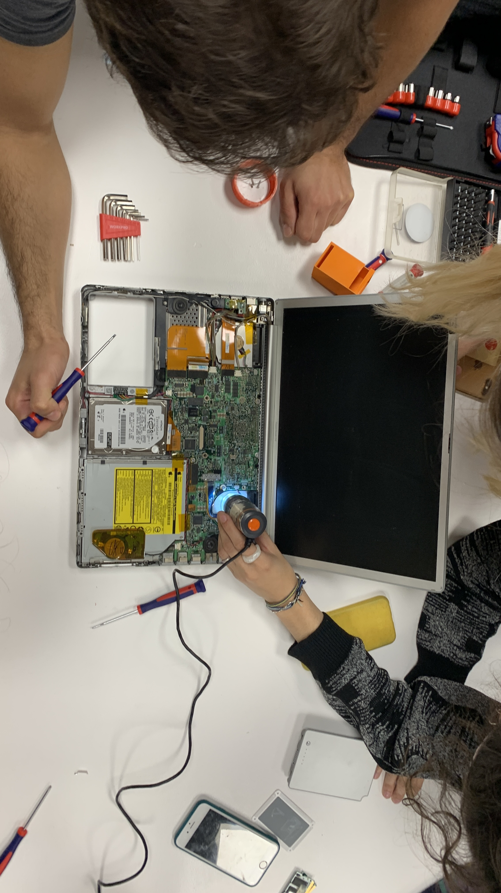

Objective: We want to eat more locally produced food.
Hypothesis: the food from the vending machine does not come from local sources.
Question: Where does the food from the vending machine come from?
Ideas on data gathering:
Camera
- Put a camera next to vending machine and detect which brands are being bought
- Use it to detect whether people are interested in knowing where the products are actually coming from.
- Engage people to ask whether they can understand if foods are produced locally from the label itself
- Ask people to take photos of the serial number each time they buy something (this way we don’t have to empty out the vending machine)
Web scraping
- understand where the ingredients are coming from through online sites
GPS
- Use it to make a map of where products are coming from
In the end we voted for the webscraping tool. Here is how we used it in our research.
Journal: Food Origins
MDEF: Measuring the world / A world in data activity report.

Brainstorming
Tool selection
Web scraping: Manually and Automated through python
We found websites that have databases about food production, import and export
- Oec

- ITC Trade Map

All database sources are written below.
How do you combine the tool provided with your creativity to prove your hypothesis? How long did you capture data?
We decided which categories of food brands and ingredients to research, basing ourselves on the available resources within IAAC's specific vending machine. We started small, then built up until we reached a global scale of interconnected supply chains.
List all the materials needed, including those given to you, those you source or even things you built yourself.
Techniques used:
- Manual “web scraping”
- Automated web scraping
- Scanning products through Open Food Facts app
- Researching through food brand website
Resources used:
- delikia.es
- www.girofibra.com/
- es.openfoodfacts.org
- oec.world
- trademap.org
- Oscar ❤️
Explain the setup process.

We looked at the products in the vending machine and tried to gather information about each one, using different websites.
Describe the raw data you collected by posting a sample i.e. a picture, a screen capture, etc.


Excel sheets generated from open food facts, Map from open food facts, Excel sheets generated from ITC trade map and Interactive map from OEC
Thanks to all of these sources, we managed to cross reference the information which we obtained. We noticed many differences from one resource to the other.
Post at least two images of a chart, a screen-shoot of your data, that you used to prove if your hypothesis is false.
We were surprised to see that the Natwins cookies claimed their product was "local". However, they do not define what exactly local means, and later state that their ingredients come from the "Mediterranean".
The mediterranean area includes 21 countries, which means that the food origins are almost untraceable (Albania, Algeria, Bosnia and Herzegovina, Croatia, Cyprus, Egypt, France, Greece, Israel, Italy, Lebanon, Libya, Malta, Monaco, Montenegro, Morocco, Slovenia, Spain, Syria, Tunisia, and Turkey)

 Web scraping v/s Open APIs
Web scraping v/s Open APIs
Sometimes it might be beneficial to see if there is an open API to access a database instead of going for web scraping the frontend data right away. In the case of Openfoodfacts.com, they offered an open and
very well-documented API, offering various export formats. This allowed us to easily download and analyze the complete dataset for the product category of 'sandwiches'. This was made possible thanks to all the data being covered by the
Open Data Commons.
Last step
We decided to buy a sandwich from the vending machine and trace the possible origins of the main ingredients, using OEC’s data concerning Spain’s imported products.
The unit of measurement was the value of the product in USD$ and not in tonnes.
The primary ingredients of the sandwich were:
- wheat
- pig meat
- cheese
- nuts
- eggs
- yeast
- olive oil
And these were the primary imports in Spain:
Of course, this only displays the probability of where each component originated
if they were imported. Yet again, the data available to us was incomplete.
Conclusions
- It is very difficult to retrieve information about where food comes and goes,
- There is a lack of transparency regarding the movement of goods,
- There is no detailed information available to the public about food sources,
- Recognising that Web Scraping is an option, but not always the best or more efficient one.
We now understand that our expectations were too high: we assumed that a lot of the data regarding food production would be available to the public. Maybe we could re-orient our objective from location to nutrition, because that information is much more available.
Tips: Explain one or more mistakes you've made during that phase? What would you change if you did it again? What if you will have more time?
Defining a more specific target in our hypothesis, would have allowed us to access more relevant information. Also, using a different context (restaurant, grocery store) would have yielded more interesting results.
Solutions
Starting an open conversation on the topic of food origins:
- How can we re-imagine the vending machine? Can we think of a better, more transparent alternative?
- If we could trace all our food, we could create legislation that could regulate and promote a circular economy.
- Why don’t we question the transparency of our food system more often? It’s such a basic need.
- If we can trace food, how will it change the industry?
- Can we accurately track the carbon emissions of our food ? often data is private or hard to find.
Find the full group presentation
here
Find the original hackmd report
here
Activity conducted by Angel Cho, Chris Ernst, Julia Steketee, Tatiana Butts, Paula Del Rio and Vikrant Mishra.
---------------------------------------------------
Overall, this week was jam-packed with different, engaging activities. There is a lot to talk about when it comes to planned obsolescence and data gathering in the tech industry. Something that particularly struck me was when we were talking about our objectives during the data exercise, and Victor mentioned that we are not expected to save the planet in two days, so we should pick topics that interest and engage us, regardless of what the outcome may be. I remember he specifically said:
“I know a lot of people who said they were going to save the world and instead they end up rich.”
And I think that sums up the tech industry.


 
